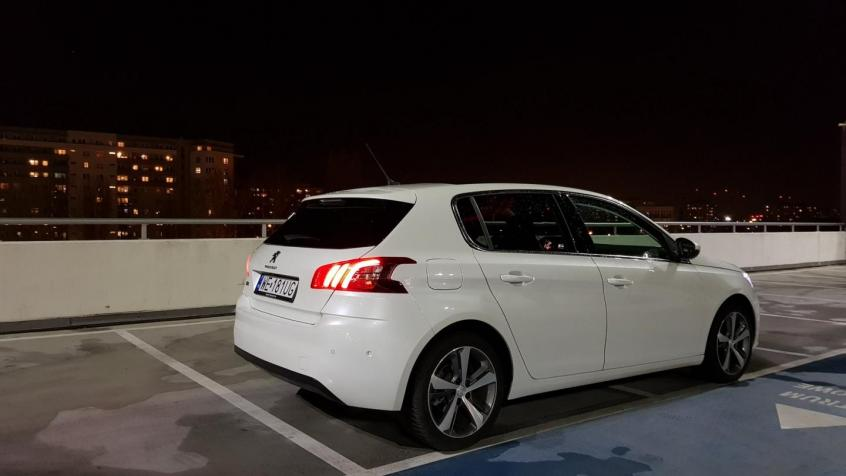

Historia najpopularniejszych marek samochodów?
Zacznijmy od historii samej motoryzacji...
- 1764 r. – pierwszy pojazd napędzany silnikiem dwucylindrowym parowym przeznaczony do ciągnięcia przedmiotów
- 1802 r. – pierwsza lokomotywa drogowa
- 1827 r. – pierwszy pojazd parowy w ruchu pasażerskim
- 1884 r. – został zbudowany pierwszy pojazd benzynowy
Pierwszym udokumentowanym pojazdem napędzanym silnikiem cieplnym był parowy wehikuł francuskiego inżyniera wojskowego Nicolasa-Josepha Cugnot zbudowany w 1769. Pojazd Cugnot’a przeznaczony do ciągnięcia dział był napędzany prymitywną, dwucylindrową maszyną parową, która umożliwiała jego ruch z prędkością zaledwie 4 km/h. Dlatego też pojazd ten nie doczekał się uznania ówczesnych ludzi i szybko odszedł w zapomnienie. W 1801 angielski inżynier Richard Trevithick reaktywował ideę użycia maszyny parowej do napędzania pojazdu. Udoskonaliwszy maszynę parową, zastosował ją do napędu „lokomotywy drogowej” i jako pierwszy w świecie w 1804 przejechał pomyślnie 150 km, zabierając jednocześnie 12 pasażerów. Parowóz ten nie odniósł jednak sukcesu finansowego, i dlatego też często błędnie podaje się Rakietę George’a i Roberta Stephensonów jako pierwszy parowóz świata. Został on skonstruowany w 1829, właściwie była to udoskonalona wersja parowozów konstruowanych w poprzednich latach (pierwszą linię kolejowa George Stephenson uruchomił już w 1825). W Rakiecie zastosowano wielorurowy kocioł, który znacznie poprawił jej osiągi. Zbudowano ją głównie dla uczestnictwa w konkursie Rainhill Trials, którego zwycięska maszyna miała być używana przez kolej Liverpool–Manchester[w innych językach]. Rakieta zwyciężyła, ponieważ jako jedyna przetrwała wszystkie próby, a jej osiągi odpowiadały organizatorom. 15 września 1830 miał miejsce pierwszy śmiertelny wypadek w historii kolei – podczas oficjalnego otwarcia linii Liverpool – Manchester zginął William Huskisson. Skonstruowanie przez belgijskiego wynalazcę Étienne’a Lenoira (1822–1900) pierwszego silnika o spalaniu wewnętrznym w 1860 roku, zainspirowało niemieckiego wynalazcę Nikolausa Otto (1832–1891) do skonstruowania silnika czterosuwowego, który opatentował w 1876 roku[8]. Wcześniej, w 1862 roku, silnik czterosuwowy został opisany i opatentowany przez francuskiego inżyniera Alphonse’a Beau de Rochasa (1815–1893), jednak opis w patencie nie był wystarczająco dokładny, co pozwoliło Otto na uzyskanie własnego patentu[8]. W latach 80. XIX w., kiedy Otto oskarżył producentów francuskich o nielegalne wykorzystanie jego patentu, ci powołali się na wynalazek de Rochasa. Patent Otto został skasowany i wszyscy przemysłowcy mogli stosować silnik czterosuwowy bez opłat patentowych[8].
W 1883 roku byli asystenci Otto, Gottlieb Daimler (1834–1900) i Wilhelm Maybach (1846–1929) opracowali jednocylindrowy czterosuwowy silnik spalinowy, a jako paliwo zastosowali benzynę[8]. Wybór benzyny jako paliwa nie był oczywisty, znane były różne frakcje ropy naftowej , a w powszechnym użyciu była oliwa z oliwek oraz olej rzepakowy[8]. Daimler opatentował silnik w 1885 roku[8].
W 1885 roku Carl Benz (1844–1929) zbudował samochód trójkołowy z takim silnikiem – Benz Patent-Motorwagen Nummer 1[9], który rozwijał prędkość 16 km/h[8]. Benz, który opatentował pojazd w 1886 roku, uważany jest za konstruktora pierwszego samochodu[8]. W 2011 roku patent Benza DRP 37435 „Fahrzeug mit Gasmotorenbetrieb” został wpisany na międzynarodową Listę UNESCO najbardziej wartościowych dokumentów – Pamięć Świata (ang. Memory of the World)[10].
Benz zaczął udoskonalać swój pojazd w zakładach swojej firmy Benz & Cie. Rheinische Gasmotorenfabrik w Mannheim i w 1888 roku wypuścił na rynek ulepszoną wersję swojego pojazdu, która spotkała się z dużym zainteresowaniem, lecz nie znalazła wielu nabywców[8]. 5 sierpnia 1888 roku żona Benza, Bertha, w tajemnicy przed mężem udała się wraz z nastoletnimi synami w podróż z Mannheim do Pforzheim samochodem skonstruowanym przez męża[8]. Podczas podróży osobiście dokonywała koniecznych napraw, jak przetkanie rurki doprowadzającej paliwo do gaźnika przy pomocy szpilki do włosów[8]. Tym samym zapisała się w historii jako pierwsza osoba, której udało się samodzielnie pokonać samochodem ponad stukilometrowy dystans (105 km)[8]. Wyprawa Berthy Benz przyniosła wielki rozgłos, co przełożyło się na zwiększenie sprzedaży samochodów Benza[8].
W 1886 roku Daimler skonstruował kolejny pojazd ze swoim silnikiem – pierwszy samochód czterokołowy[8]. W 1890 roku Daimler założył własne przedsiębiorstwo Daimler-Motoren-Gesellschaft[1]. W 1897 roku Rudolf Diesel (1858–1913) skonstruował silnik o zapłonie samoczynnym[8], który początkowo był zawodny[8] i znalazł zastosowanie w produkcji seryjnej samochodów osobowych dopiero w 1936 roku[11].